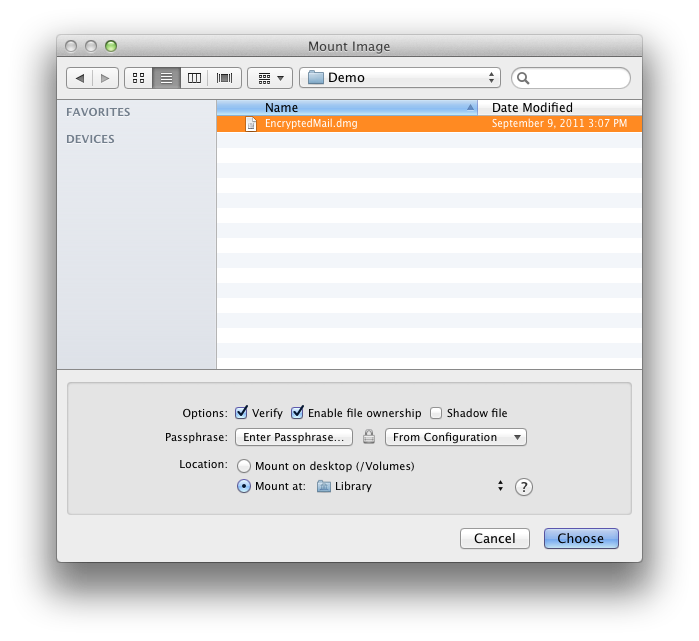

The most straightforward way to mount a disk image is to double-click it. This
works on any Mac OS X installation, even if DropDMG isn’t installed.
DropDMG also provides the Mount Image… command in the File menu, for
additional options and convenience.
- Verify
- Verification ensures that the contents of the disk image are intact, i.e.
the file is not damaged. You can turn off verification to reduce the time it
takes to mount the disk image. For more information on verification, see the
Verify Image… section.
- Enable file ownership
- When you mount an image by double-clicking it, Mac OS X treats every file on
the mounted image as though it were owned by you (the current user). When
you mount an image using this option, the files are displayed with their
actual owners, as stored on the disk image. Thus, if you use DropDMG to
back up a collection of files whose ownership matters, you should also use
DropDMG to mount the image when you restore from that backup.
- Shadow file
- This option lets you mount a read-only disk image as read-write. Any changes
that you make are written to a .shadow file so that the original disk
image file remains unchanged. One use for this feature is if you need to use
Spotlight to search a read-only disk image. Spotlight requires write access
(even if its index is already up-to-date), but it will work if you mount the
disk image using a shadow file. To make a new disk image file that
incorporates the changes from the shadow file, drag the mounted disk image
onto DropDMG.
- Passphrase
When you double-click an encrypted disk image, Mac OS X prompts you for the
passphrase. DropDMG lets you avoid this step, which is particularly handy
when bulk-mounting images with the same passphrase or when mounting
segmented disk images. The Enter Passphrase… button lets you specify the
passphrase for mounting the disk image. The From Configuration pop-down
menu lets you use a passphrase that’s stored in your keychain as part of a
configuration.
- Location
- Normally, disk images are mounted on the desktop. You can also specify some
other location in your local filesystem. This is useful when another
application looks for files in a particular folder. For example, say that
you want to encrypt your mail. You could create a New Blank Disk Image…
and then mount it at /Users/<username>/Library/Mail/, and then Apple
Mail will stores its files on that disk image.
One advantage of using DropDMG’s Mount Image… command, rather than
double-clicking a disk image in the Finder, is that DropDMG only makes you enter
the passphrase for an encrypted, segmented disk image once. The Finder requires
that you type the passphrase once for each segment or that you store the
passphrase in the keychain, which you might not want to do.
Additionally, DropDMG’s Mount Image… command will skip the display of any
software license agreements.
You can hold down the Command or Shift key to mount multiple disk images at once
using the same options.
